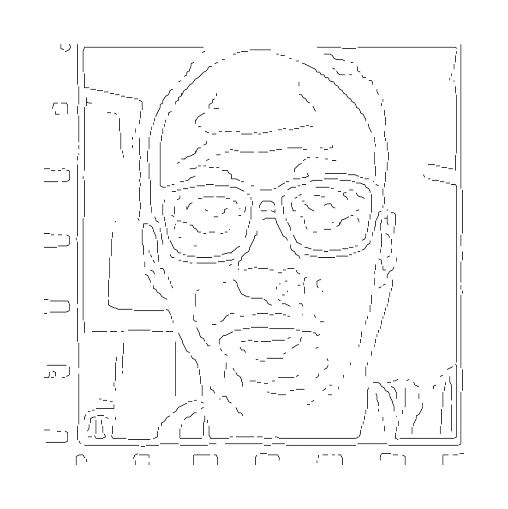
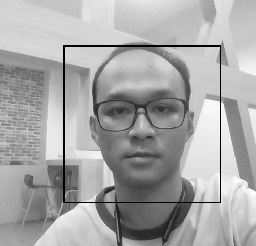
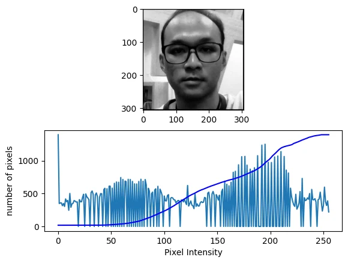
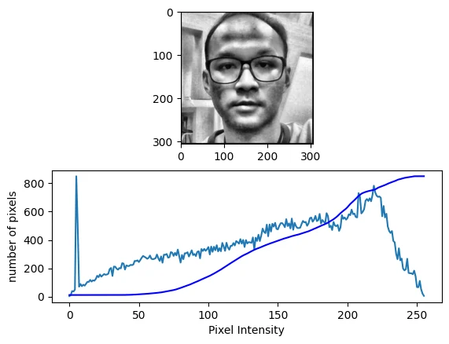
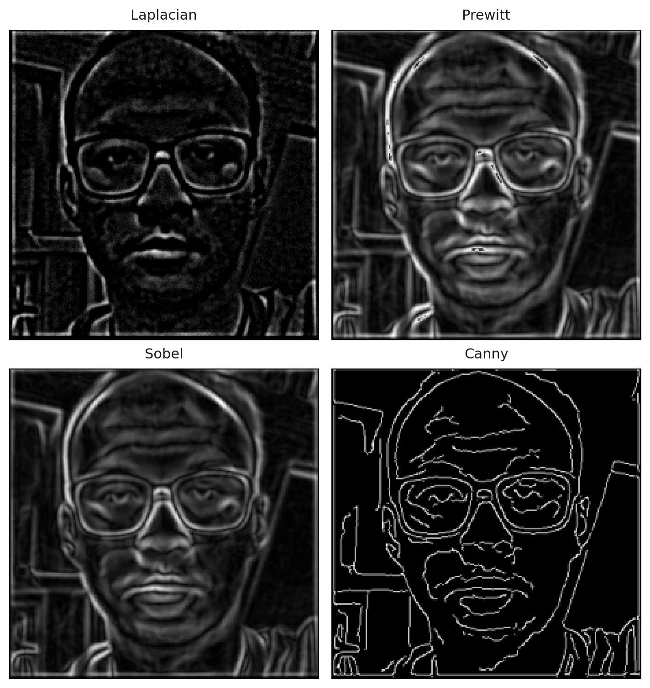
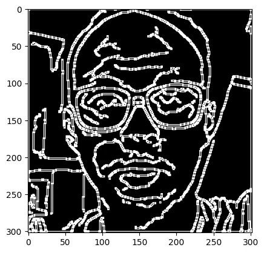
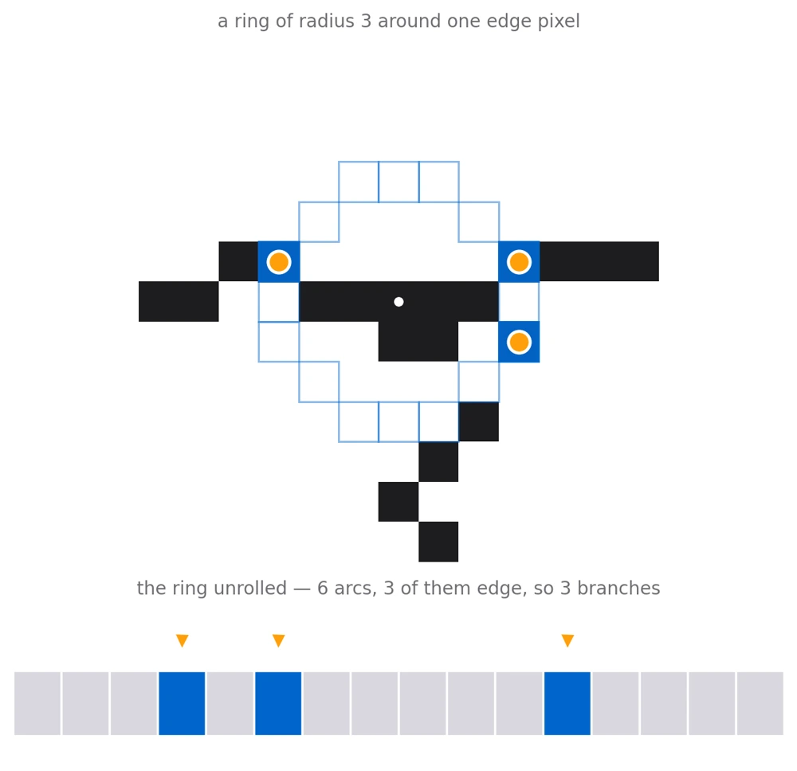
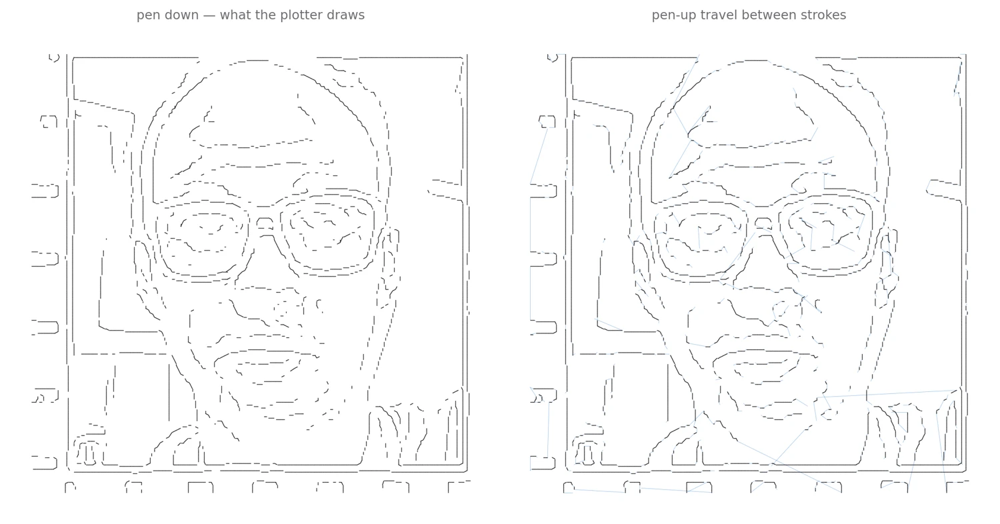

Look at the camera and a pen plotter draws you — a webcam frame turned into ordered strokes a machine can follow.

A plotter cannot be handed a photograph. It follows a list of moves: go here with the pen up, go there with the pen down. So the whole project is one long reduction — from a 24-bit webcam frame, to a grayscale face, to a one-pixel-wide edge map, to a graph of strokes, to G-code.
The first half is ordinary computer vision and the notebook works through it operator by operator, comparing the options rather than assuming one. The second half is the interesting half: an edge image is a set of lit pixels with no notion of a line, a corner or a branch, and the plotter needs all three.
Crop to what matters, then fix the lighting.
A photo from a laptop webcam is mostly room. The classic Viola–Jones Haar cascade that ships with OpenCV finds the face — scaleFactor 1.2, minNeighbors 5 — and the box it returns is then grown by 1.3× about its own centre before cropping.
That enlargement matters more than it looks. A tight detection box cuts the hairline, the chin and the ears, and those outlines are most of what makes a line drawing recognisable as a particular person.

Edge detection is only as good as the local contrast it is given, and a face lit from one side has plenty of tone in the bright half and almost none in the shadow. Stretching the histogram globally fixes the average and leaves the shadow flat.
CLAHE — contrast-limited adaptive histogram equalisation — instead equalises each tile of an 8×8 grid on its own, clipping any histogram bin that exceeds a clipLimit of 5 and redistributing the excess so a tile of near-uniform skin does not get amplified into noise. The notebook plots the histogram and CDF for both and keeps CLAHE.


Four operators, one of which survives contact with a pen.
Before any gradient is taken the image gets a Gaussian blur, ksize 15 at σ = 2, built the explicit way as a 1-D kernel and its transpose. Derivatives amplify noise, and skin texture is noise as far as an edge detector is concerned.
Then the comparison. Laplacian with a four-neighbour kernel is a second derivative and picks up every speck. Prewitt and Sobel return gradient magnitude, so an edge comes out as a wide ridge that fades at the sides — a plotter would draw it as a thick smear. Canny is the only one of the four that does non-maximum suppression and hysteresis, and so the only one that returns something already one pixel wide.

Gradient magnitudes are not comparable across operators, so each gets its histogram plotted and its own inverse binary threshold — 3 for the Laplacian, 2 for Canny, 20 for Sobel, 60 for Prewitt. Canny's output goes forward, through one more gradient pass and a final cut at 35, and comes out as a boolean array: true where there is a line, false everywhere else.

Growing a ring until it tells you where the line goes.
Here is the actual problem. That boolean array says this pixel is lit. It does not say which pixels belong to the same line, which way the line runs, or where one line forks into two. A pen needs all of that.
The trick is to stop thinking in pixels and start thinking in rings. Around a given edge pixel, sample a discrete circle of radius r — the integer coordinates of every such circle for r = 0…10 are precomputed once in constants.py, in order, so walking a ring is just walking a list. Read the edge map at each ring position and you get a loop of true/false.
Run-length encode that loop, wrapping across the seam, and you get arcs. Now the count means something: two arcs is a line passing through, and four or more arcs is a junction. The midpoint of each true arc is the direction a stroke continues in. A T-junction announces itself as three separate true arcs, with no special case for corners, forks or crossings anywhere in the code.

One radius does not suit every place in the picture. Too small and a ring sits entirely inside a thick blob; too large and it reaches across a gap into a different line. So the radius grows from zero and the arc count is watched:
With a radius chosen, a depth-first search claims every connected lit pixel within it for the current node, links up to any neighbouring node already claimed, and then recurses outward along each branch. Pixels get consumed exactly once, and what falls out is a graph: nodes on the skeleton of the drawing, edges where the pen should travel between them.
A graph does not tell you where to start. Euler does.
The graph says what to draw but not in what order, and order is what costs time on a plotter. Every pen-up hop is wasted motion.
The emitter leans on a classical result. In any graph, a trail that uses each edge once can only start and finish at a vertex of odd degree — so nodes with an odd number of connections, plus isolated ones, are exactly the places a stroke has to begin or end. Those get drawn first. After each stroke the next start is chosen greedily by distance from where the pen just stopped, which is a cheap approximation to a travelling-salesman ordering and takes most of the slack out of the travel.
Whatever still has unused connections afterwards must have even degree everywhere, which means it lies on a cycle — and a cycle can be entered anywhere, because it is guaranteed to come back. Those get walked second.

Nodes become coordinates with a swap and a halving — the image column becomes X, the image row becomes a negative Y, both scaled by one half. That scale is the whole calibration: one pixel of the edge map is half a millimetre of paper, so a 301-pixel crop lands as a 150.5 mm square, which is what the machine's work area is set to.
Moves come out as G0 for a rapid with the pen clear and G1 for a cut. A final pass walks the file and injects the pen commands, M5 and M3 S30, at each transition between the two — the servo that lifts and drops the pen is driven off the spindle output, which is the usual trick on a hobby GRBL controller.
Two axes, one servo, and a file full of moves.
The finished .nc file goes to a GRBL sender, which previews the whole path over a 150.5 mm grid before the first move — and then the plotter works through it stroke by stroke, lifting between them.
scaleFactor 1.2, minNeighbors 5, box enlarged 1.3×clipLimit 5, 8×8 tiles — compared against global equalisationksize 15, σ 2(1, 100) carried forwardr = 0…10, run-length arcs, DFS pixel ownership, stroke graphG0/G1 moves at 0.5 mm per pixel, with M5 / M3 S30 pen commands injectedThe tool-path figures on this page were rendered by running the repository's own vectoriser and G-code emitter over the notebook's edge map — the notebook computes the path but never plots it.